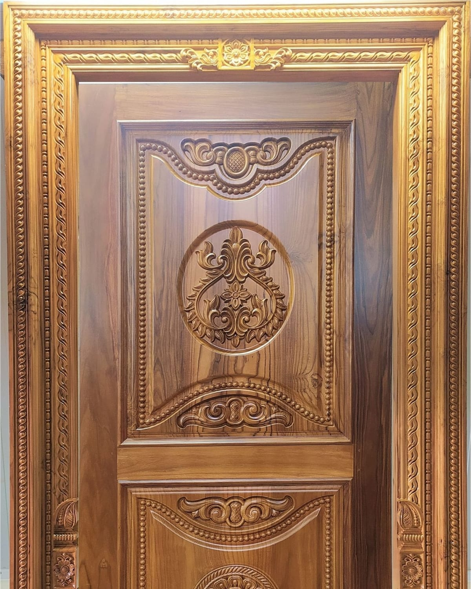

Started with ₹4,40,000 and a conviction nobody shared.
In 1986 Mrs. Sarala Hegde saw what others had not: that heritage carving belonged in ordinary homes, not only in temples and palaces. She began with ₹4,40,000 of seed capital, ₹1,40,000 of it loaned by Vijaya Bank, Belman Branch.
Fine timber was within easy reach. Almost nothing else was. The workshop carved out a niche in made-to-order doors and frames, windows, wardrobes, modular kitchens and furniture — and the clientele grew into builders, heritage houses, hotels and places of worship across the coast.
Her son, Mr. Suhas Hegde, an engineering graduate of Malnad Engineering College, brought automated designing and carving into the workshop and is today its Managing Director. The machine keeps up. The hand still decides.